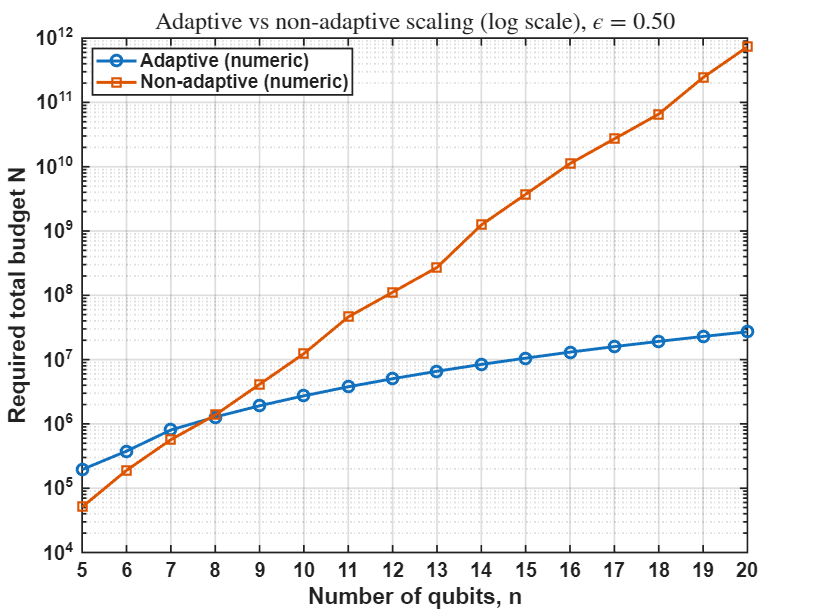

This paper studies when adaptivity can help in quantum tomography under the same Pauli basis measurement hardware. We construct a structured family of quantum states for which an adaptive strategy can identify the relevant hidden structure efficiently, while any fixed non-adaptive allocation can be exponentially inefficient in the worst case.

Adaptive tomography exploits the hierarchical structure sequentially, while non-adaptive tomography spreads its measurement budget over a much larger space.
The result does not claim that adaptivity always improves quantum tomography. Instead, it shows that after the state family, measurement architecture, and success criterion are specified carefully, adaptivity can provably change the sample-complexity scaling.
Pauli basis measurements are experimentally natural and widely used. The main point is that one does not need to change the measurement hardware to obtain a strong separation: the advantage comes from choosing the next measurement setting sequentially based on previous outcomes.
For a hierarchical prefix family of structured quantum states, adaptive tomography can recover the hidden structure with polynomial sample complexity, while non-adaptive tomography requires exponentially many samples in the worst case under the same measurement architecture.
BibTeX entry:
@article{goldar2026exponential,
title={An Exponential Advantage for Adaptive Tomography of Structured States under Pauli Basis Measurements},
author={Goldar, Alireza and Qin, Zhen and Zhu, Zhihui and Gong, Zhe-Xuan and Wakin, Michael B.},
journal={arXiv preprint arXiv:2604.26043},
year={2026}
}